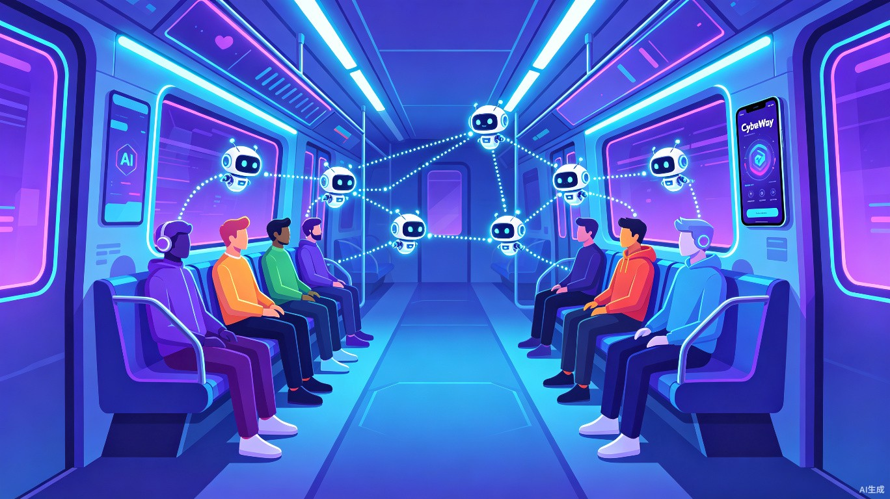

在地铁上，你的 AI 分身正在帮你找到那个"聊得来"的人。匿名、智能、从线上到线下，完成一次奇妙的社交闭环。

每天数千万上班族在地铁上消磨碎片时间，刷短视频、看帖子——孤独地在人群中沉浸于屏幕。明明同一节车厢里就坐着志趣相投的人，却毫无交集。
上班族平均通勤时间超过 50 分钟，大部分时间花在被动内容消费上，既无社交价值，也无情绪收获。
想认识新朋友，但现实中不敢开口；社交软件又太"刻意"，缺乏自然、低压力的破冰方式。
地铁是一个天然的高密度、高重复性社交场景——同一时间段、同一条线路的人，极大概率有相似的生活轨迹和兴趣。
当前 AI 主要服务于内容推荐和工作效率，几乎没有产品将 AI 智能体用作"替你去社交"的桥梁。
CyberWay 是一个基于地理位置的匿名社交网页游戏。打开网站，你将进入一个虚拟渲染的地铁车厢，看到此刻真实在线的乘客。每个人都可以设置自己的匿名形象和附属信息，并拥有一个专属的 AI 智能体。你的智能体会自动搜索、筛选、接触在线的其他用户——代替你完成最初的社交试探。
3D 渲染的真实感车厢界面，根据你的地理位置匹配当前线路，实时显示在线用户。
每位用户拥有一个 AI 智能体，它会根据你的兴趣标签和偏好，自动搜索并与其他用户互动。
AI 匹配成功后，双方可选择线下见面——通过定位和蓝牙靠近对方，找到"真实的彼此"。
打开 CyberWay 网站，系统根据你的 GPS 定位渲染出你当前所在线路的虚拟车厢，展示此刻在线的其他乘客。
设置你的匿名形象（虚拟头像 + 昵称 + 兴趣标签）。你可以选择展示或隐藏任何信息，完全掌控隐私边界。
你的 AI 智能体上线后自动开始工作：搜索附近用户、发起对话、试探兴趣匹配度。你可以实时查看互动轨迹和聊天记录。
当 AI 发现聊得来的人，会向你推送通知。你可以选择亲自接手对话，与对方继续深入交流。
双方都觉得合适？开启定位和蓝牙功能，在车厢中靠近对方，找到"真实的彼此"，互换联系方式。
下图展示了 CyberWay 完整的用户体验旅程，从进入虚拟车厢到线下见面的全链路。
flowchart LR
A[📱 打开网站
进入虚拟车厢] --> B[🎭 创建匿名分身
设置兴趣标签]
B --> C[🧠 AI 智能体上线
自动搜索与互动]
C --> D[🔔 匹配成功通知
用户接手对话]
D --> E{双方是否合适?}
E -- 是 --> F[📍 开启定位+蓝牙
线下靠近寻找]
F --> G[🤝 找到彼此
互换联系方式]
E -- 否 --> C
CyberWay 的核心用户群体是每天乘坐公共交通通勤的年轻上班族。他们有社交需求，但缺乏低压力的社交渠道。
不善言辞，但内心渴望交流。AI 分身帮他完成破冰，只有遇到真正聊得来的人才会亲自出马。
通勤时间长，喜欢在地铁上"摸鱼"。把 AI 社交当作一种有趣的消遣，顺便认识有意思的人。
工作压力大，社交圈子窄。希望在通勤路上遇到同行业或互补领域的人，拓展人脉。
传统社交软件需要用户主动筛选和聊天，消耗大量时间和精力。CyberWay 的 AI 智能体 替你完成初筛和破冰，你只需要在 AI 筛选后做决策——从 100 个潜在对象中，AI 帮你找到 3 个真正聊得来的，你只需花时间与这 3 个人深入交流。
现代城市人越来越孤独。CyberWay 利用 AI + 地理位置技术，将"附近的人"重新连接起来。它不只是一个游戏，更是一种 新型城市社交基础设施——让同一座城市、同一条通勤路线上的人，有机会从陌生人变成朋友。
CyberWay 计划采用以下技术栈，确保产品在功能和体验上达到最佳状态。
CyberWay — 用 AI 重新定义"附近的人"。下一个在地铁上遇到的朋友，可能就是 AI 帮你找到的。